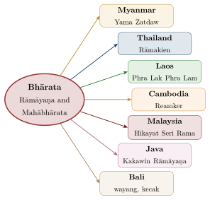

Chapter 12: The Living Legacy: Cultural Impact of the Epics and Purāṇas¶
The epics and Purāṇas have shaped the literature, art, performance, religious practice and politics of South and Southeast Asia for some two thousand years. This chapter surveys that legacy: the regional retellings, the Persian translations of the Mughal court and the Sikh Dasam Granth, the spread of the epics to Southeast Asia, temple sculpture, dance, recitation and ritual theatre, modern media, festivals and pilgrimage, the debate over archaeology, astronomy and the historicity of the epics, and their global reception.
12.1 Regional Adaptations in the Subcontinent¶
The epics have been retold, reinterpreted and re-imagined in virtually every major language of the subcontinent. These retellings are not translations but creative works that reflect the language, devotion, social world and politics of their regions and periods (Richman 1991; Ramanujan 1991).
12.1.1 Kamban and the Tamil Irāmāvatāram¶
The Tamil Irāmāvatāram of Kampaṉ (usually dated to the 12th century, though some scholars prefer the 9th) is counted among the classics of Tamil literature. Kampaṉ created not a translation of Vālmīki but a new poem, filtered through Tamil poetic convention and the devotion of the Vaiṣṇava Āḻvārs (Hart and Heifetz 1988).
Several features distinguish Kampaṉ from Vālmīki:
-
Rāma’s divinity: Rāma is consistently presented as Viṣṇu incarnate.
-
A dignified Rāvaṇa: Rāvaṇa is a great king brought low by desire; he carries Sītā off without touching her, lifting the ground on which she stands.
-
Love before the bow: Rāma and Sītā see and fall in love with each other before the contest at Mithilā.
-
Tamil form: The poem is composed in the viruttam stanzas of medieval Tamil and is deeply rooted in the Tamil landscape and its poetic conventions.
12.1.2 Tulsīdās and the Rāmcaritmānas¶
Tulsīdās began his Rāmcaritmānas, in Awadhi, at Ayodhyā in 1574 and completed it at Banaras (Lutgendorf 1991). Based largely on the devotional Adhyātma Rāmāyaṇa, it became the most influential version of the story in North India.
-
Devotional frame: The story is told within nested dialogues — Śiva to Pārvatī, the crow Kākabhuśuṇḍi to Garuḍa, Yājñavalkya to Bharadvāja.
-
Dohā–caupāī verse: Rhymed popular metres easily memorised by the unlettered.
-
Synthesis: Devotion to Rāma’s personal form combined with Advaitic and Śaiva elements.
-
Hanumān: The Hanumān Cālīsā, traditionally attributed to Tulsīdās, became one of the most recited prayers of North India.
-
Living scripture: The Mānas is recited in homes and temples, sung in public mānas gatherings and enacted in Rāmlīlā. Tulsīdās omits the banishment of Sītā altogether.
Tulsīdās, Rāmcaritmānas, Bālakāṇḍa (caupāī)
maṅgala bhavana amaṅgala hārī / dravau so dasaratha ajira bihārī
Meaning: May he who is the abode of blessings and the remover of misfortune, who played in Daśaratha’s courtyard, be gracious.
12.1.3 Eḻuttacchaṉ and the Malayalam Tradition¶
Tuñcattu Eḻuttacchaṉ (16th century), traditionally called the father of modern Malayalam literature, composed the Adhyātma Rāmāyaṇam Kilippāṭṭu, in which a parrot narrates the story. Tradition also credits him with popularising the Malayalam alphabet among non-brahmin learners, though the history of the script is older and more complex. His Rāmāyaṇa is recited in Kerala homes throughout the month of Karkkiṭakam (July–August), now often called the “Rāmāyaṇa month.”
12.1.4 Regional Mahābhāratas¶
The regional Rāmāyaṇas are listed in Table 2.3. The Mahābhārata was retold in the regional languages as well, often by poets who stood at the beginning of their language’s literary history; the Kannada poet Pampa, for example, was a Jain, and his version makes Arjuna the hero and identifies him with his own royal patron (Table 12.1).
| Author | Language | Period | Work and feature |
|---|---|---|---|
| Pampa | Kannada | 941 CE | Vikramārjunavijaya, a Jain-authored Mahābhārata |
| Nannaya, Tikkana, Errana | Telugu | 11th–14th c. | The Telugu Mahābhārata (Āndhra Mahābhāratamu) |
| Villipputtūrār | Tamil | 14th c. | Villipāratam, the Tamil Mahābhārata |
| Sāraḷā Dāsa | Odia | 15th c. | The Odia Mahābhārata, with many local episodes |
| Kumāravyāsa | Kannada | 15th c. | Karṇāṭa Bhārata Kathāmañjarī |
| Kāśīrām Dās | Bengali | 17th c. | The classic Bengali Mahābhārata |
12.1.5 Folk and Oral Epics¶
Alongside the literary versions, the epics live in oral and folk traditions that often transform them radically. In the Garhwal Himalaya the Pāṇḍavas are the subject of the Pāṇḍav līlā, a ritual dance-drama in which villagers are possessed by the heroes; in Tamil Nadu, Draupadī is worshipped as a goddess with fire-walking festivals; Bhīl communities of western India have their own Bhārath, in which Draupadī and the gods appear in quite unfamiliar roles; and regional oral epics such as Ālhā and the Rajasthani epic of Pābūjī borrow epic motifs and frames (Blackburn et al. 1989; Hiltebeitel 1988). These traditions show that the “Mahābhārata” and “Rāmāyaṇa” of many communities were never simply Vālmīki’s or Vyāsa’s. The Draupadī festival and the Pāṇḍav līlā are described more fully in Section 12.5.
12.1.6 Persian Translations at the Mughal Court¶
Under Akbar (r. 1556–1605) the epics entered Persian, the language of the Mughal court, in translations that were among the most ambitious literary projects of the reign. In 1582 Akbar ordered a translation of the Mahābhārata, which was carried out at Fatehpur Sikri over the following years. Brahmin scholars explained the Sanskrit text orally in Hindi, and Muslim scholars rendered their explanations into Persian; Naqīb Khān was the principal translator, and the historian ‘Abd al-Qādir Badā’ūnī was among his collaborators. The result, the Razmnāma (“Book of War”), was introduced by a long preface by Akbar’s minister Abu’l Fazl, who explained, among other reasons, that the emperor wished each community to understand the other’s traditions and so to lessen their enmity, and that kings could learn from the history the epic told. A Persian Rāmāyaṇa followed, completed by Badā’ūnī in 1589. Both works were copied in lavishly illustrated manuscripts for the emperor, for members of his family and for his nobles: the imperial Razmnāma of the 1580s is now in Jaipur, and the Rāmāyaṇa made for the general ‘Abd al-Raḥīm Khān-i Khānān is in the Freer Gallery of Art in Washington. Abu’l Fazl’s brother Fayẓī recast the story of Nala and Damayantī as a Persian poem, Nal u Daman, in the 1590s, and later Mughal and provincial courts produced further Persian Rāmāyaṇas.
Audrey Truschke has shown that these translations were more than exercises in curiosity. Read together with the court’s other dealings with Sanskrit learning, they belonged to the imperial project of defining Mughal kingship: the Razmnāma presents the Mahābhārata as a history of Indian kings and a mirror for rulers, and Akbar’s courtiers read it as a source of political as well as religious knowledge (Truschke 2016). The translators also changed the text. They abridged it, explained Sanskrit terms and at times put Hindu theology into the vocabulary of Islamic thought, and Badā’ūnī, who disliked the task, recorded his discomfort with it in his own history. The Persian versions reached readers who would never have read Sanskrit, and they went on being copied and illustrated long after Akbar. They are part of the epics’ history in their own right: a chapter in which Muslim patrons, translators and painters, as well as brahmin scholars, decided how the stories were told.
12.1.7 Sikh Retellings: The Dasam Granth¶
The Sikh scripture, the Ādi Granth or Guru Granth Sahib, uses Rām and Hari as names of the one formless God rather than of Daśaratha’s son; like Kabīr, whose verses it includes, it rejects the worship of avatāras. A second Sikh collection, the Dasam Granth (“Book of the Tenth [Guru]”), contains long retellings of the avatāra stories. Compiled in the early eighteenth century and associated by tradition with the court of Guru Gobind Singh (1666–1708) at Anandpur, it is written mostly in Braj Bhāṣā in the Gurmukhī script. Its Caubīs Avatār (“Twenty-Four Incarnations”) retells the descents of Viṣṇu, among them a Rām Avatār of several hundred stanzas, which tells the whole Rāma story, and a Kṛṣṇa Avatār, the longest of the avatar narratives, which follows the tenth book of the Bhāgavata (Section 7.9). The collection also includes retellings of the Devī Māhātmya, among them the Punjabi Caṇḍī dī Vār. Colophons date parts of the avatar narratives to the last decades of the seventeenth century.
These retellings dwell on battle and heroic virtue, and they are framed by a theology that is not Vaiṣṇava. The avatāras appear as beings sent by the timeless Lord (Akāl Purakh) to destroy evil, not as the Lord himself, and a well-known stanza that closes the Rām Avatār declares that the poet, having taken refuge at the feet of the timeless Lord, accepts none of the competing doctrines — of Rām and Rahīm, of Purāṇa and Qur’ān. How much of the Dasam Granth is the Guru’s own composition, and how much the work of poets at his court, has been debated since the nineteenth century: reformers of the Singh Sabha movement and many modern Sikhs have questioned the attribution of the avatāra and other narrative sections, while others defend it. Robin Rinehart’s study sets out this debate and its stakes for Sikh identity (Rinehart 2011). Whatever their authorship, these narratives show the epic and Purāṇic stories being retold within a new religious community, as the Jains had retold them a millennium earlier, under a theology that changes their meaning.
12.2 The Epics in Southeast Asia¶
The epics spread across Southeast Asia from roughly the early first millennium CE onwards (Coedès 1968). Local courts and communities adopted and transformed them as vehicles for their own religious aspirations, royal legitimacy and cultural identity (Figure 12.1).

12.2.1 The Thai Ramakien¶
The Rāmakien is the Thai national version of the Rāmāyaṇa. Its classic text was composed under King Rama I (r. 1782–1809), founder of the Chakri dynasty, drawing on earlier Thai versions. It sets the story in a Thai landscape and a Theravada Buddhist milieu.
-
Phra Ram (Rāma) is an avatar of Viṣṇu (Narai in Thai).
-
Hanumān is a more playful and amorous figure, greatly beloved in Thai popular culture.
-
The epic is the basis of the khon masked dance-drama, inscribed by UNESCO on the Representative List of the Intangible Cultural Heritage in 2018.
-
Its scenes are painted along the galleries surrounding the Temple of the Emerald Buddha (Wat Phra Kaew) in Bangkok.
12.2.2 The Cambodian Reamker¶
The Reamker (from Sanskrit Rāmakerti, “the glory of Rāma”) is the Cambodian version of the Rāmāyaṇa. The Rāmāyaṇa was known in Cambodia from at least the seventh century, when inscriptions mention its recitation, but the oldest surviving Reamker texts date from the 16th–17th centuries (Jacob 1986). It is central to the repertoire of the Royal Ballet of Cambodia, proclaimed by UNESCO a Masterpiece of the Oral and Intangible Heritage of Humanity in 2003.
12.2.3 Java and Bali¶
The Old Javanese Kakawin Rāmāyaṇa (9th–10th century) and the prose versions of several books of the Mahābhārata are among the earliest monuments of Javanese literature, and the epics remain central to the wayang kulit (shadow puppet) theatre of Java and Bali. In Bali, performance is itself an act of ritual offering (yadnya). The well-known Balinese kecak, by contrast, is a twentieth-century creation, developed in the 1930s from a trance chorus with the involvement of the German painter Walter Spies (Table 12.2).
| Country | Name | Period | Key Art Form |
|---|---|---|---|
| Thailand | Rāmakien | classic text late 18th c. | Khon masked dance; mural painting |
| Cambodia | Reamker | known from 7th c.; texts 16th–17th c. | Royal Ballet; lkhon khol |
| Java | Kakawin Rāmāyaṇa; later Serat Rama | 9th–10th c.; 18th c. | Wayang kulit; Prambanan reliefs |
| Bali | Kakawin tradition | preserved from Java | Wayang kulit; kecak (20th c.) |
| Myanmar | Yama Zatdaw | c. 18th c. (court) | Classical dance-drama |
| Laos | Phra Lak Phra Lam | uncertain | Temple murals; oral recitation; Rāma as Bodhisatta |
| Malaysia | Hikayat Seri Rama | manuscripts from 17th c. | Wayang kulit Kelantan |
12.2.4 The Southeast Asian Texts and Their Sources¶
The Southeast Asian versions are often described as “adaptations of Vālmīki”, but very few of them derive from Vālmīki directly. Their sources were Sanskrit court poetry, regional Indian retellings, oral tradition and, increasingly, one another; and each was reshaped by the religion of the court that produced it — Śaiva and Buddhist in Java, Theravāda Buddhist on the mainland, Muslim in the Malay world (Raghavan 1980). The trade and political background of this transmission is treated in Volume 19, Vāṇijya and Samudra; the texts themselves are considered here.
The Old Javanese Rāmāyaṇa.
The oldest surviving kakawin, the Old Javanese Rāmāyaṇa, was probably composed in Central Java in the ninth or early tenth century; Balinese tradition names its poet as Yogīśvara. Its source is not Vālmīki but Bhaṭṭi’s Rāvaṇavadha (the Bhaṭṭikāvya, c. 7th century), a Sanskrit court poem that tells the Rāma story while illustrating the rules of grammar and poetics. The dependence, first noticed in the 1930s, was demonstrated in detail by C. Hooykaas: in its earlier cantos the Javanese poem follows Bhaṭṭi closely, often verse by verse, and reproduces many of his figures of speech, before it moves more freely in its later cantos (Hooykaas 1958). Like other kakawin it is written in Indian quantitative metres adapted to the Javanese language, and it ends with Rāma’s victory and reunion with Sītā; the Uttarakāṇḍa exists in Old Javanese only as a separate prose work (Zoetmulder 1974).
The Mahābhārata in Old Javanese.
In East Java at the end of the tenth century, under King Dharmawangśa Teguh, several books of the Mahābhārata were rendered into Old Javanese prose. These parwa texts, of which the Ādiparwa, the Wirāṭaparwa (dated by its colophon to 996) and the Bhīṣmaparwa are among the best known, abridge the Sanskrit narrative and quote short Sanskrit passages at intervals, followed by the Javanese rendering. From the eleventh century, poets used the epic as the basis of original kakawin. Mpu Kaṇwa’s Arjunawiwāha (c. 1030), written for King Airlangga, develops the episode of Arjuna’s austerities, his temptation by heavenly nymphs and his slaying of the demon Niwātakawaca; the Bhāratayuddha (1157), begun by Mpu Sedah and completed by Mpu Panuluh at Kediri, retells the war (Section 4.18); and Panuluh also wrote a Hariwangśa on Kṛṣṇa’s marriage to Rukmiṇī and the Ghaṭotkacāśraya. Other kakawin drew on Sanskrit poetry beyond the epics: Mpu Monaguṇa’s Sumanasāntaka retells the story of Aja and Indumatī from Kālidāsa’s Raghuvaṃśa. P. J. Zoetmulder showed that for these poets composition was itself a religious discipline, a “yoga of beauty” in which the poet sought union with the god present in the beauty he described (Zoetmulder 1974).
Wayang and the Javanese Pāṇḍavas.
The kakawin were read in the courts of Java and, after the spread of Islam, preserved and recited chiefly in Bali. In Java the epics lived on in the shadow theatre, which developed a vast repertoire of plays (lakon) on episodes and characters from the Mahābhārata, many of them unknown in India. The Javanese Pāṇḍavas differ markedly from their Sanskrit originals: Drupadī is the wife of Yudhiṣṭhira alone, Srikandi (Śikhaṇḍī) is a woman warrior married to Arjuna, and the heroes are attended by clown-servants, the panakawan, of whom the oldest, Semar, is an indigenous deity in humble disguise who is wiser than the gods. In Muslim Java the repertoire was given an Islamic frame by the legend that one of the saints who spread Islam, Sunan Kalijaga, used the wayang to teach the new faith; the Pāṇḍavas remained the heroes.
The Malay Hikayat Seri Rama.
The oldest manuscript of the Malay Hikayat Seri Rama, now in the Bodleian Library, Oxford, was presented by Archbishop William Laud in 1633 and is among the oldest Malay manuscripts to survive. The work is a prose romance written for a Muslim court. Rawana obtains his kingdoms through penance and the intercession of the Prophet Adam, by the favour of Allah, on condition that he rule justly; Sita is born to Rawana’s queen Mandudari and set adrift because astrologers foretell that she will cause his ruin, before she is found and brought up by another king. Scholars have traced many of its episodes not to Vālmīki but to regional and oral versions of the story current in India, several of which, like some Jain versions, also make Sītā Rāvaṇa’s daughter. The Malay shadow play of Kelantan uses a related oral tradition of the Rāma story, studied by Amin Sweeney (Sweeney 1972). A Malay Mahābhārata, the Hikayat Pandawa Lima, appears to draw in turn on Javanese sources.
The Buddhist mainland.
In Cambodia, Thailand and Laos the Rāma story was received into Theravāda Buddhist courts, and its theology changed accordingly. The Khmer Reamker keeps Rāma as an incarnation of Viṣṇu but tells the story with Buddhist values in view, and expands episodes that have little place in Vālmīki, such as Hanumān’s love for the mermaid Suvaṇṇamacchā, daughter of Rāvaṇa, who tries to thwart the building of the causeway (Jacob 1986). The Thai Ramakien shares this episode and much else with the Reamker, reflecting centuries of exchange between the two courts. In Laos the Phra Lak Phra Lam goes furthest: the story is presented as a jātaka, a former life of the Buddha, with Rāma as the Bodhisatta, and its geography is transferred to the Mekong valley. In Burma, where the Rāma story was known much earlier, the court drama of Rāma took much of its later form from Thai models brought to the Burmese court after the sack of Ayutthaya in 1767.
These versions are not deviations from a correct Indian text. Like the Jain, Buddhist and regional Rāmāyaṇas of India (Section 2.8), they show the epic narrative doing what it has always done: becoming the story of each community that tells it.
12.3 Epic Iconography in Temple Sculpture¶
The sculptural programmes of temples across South and Southeast Asia drew heavily on the epics and Purāṇas (Dehejia 1997). Among the earliest surviving Rāmāyaṇa reliefs are the panels of the Gupta-period Daśāvatāra temple at Deogarh (c. 500–550 CE); the Kailāsa temple at Ellora (8th century) carries large panels from both epics.
12.3.1 Angkor Wat — A Gallery of the Epics¶
Angkor Wat in Cambodia (built c. 1113–1150 under King Sūryavarman II) is the largest religious monument in the world. Its galleries carry long bas-reliefs: on the west side, the Battle of Kurukṣetra and the Battle of Laṅkā; elsewhere, Purāṇic scenes such as the churning of the ocean.
12.3.2 Belur and Halebidu — The Hoysala Marvel¶
The Hoysala temples of Belur (Cennakeśava temple, 1117) and Halebidu (Hoysaleśvara temple, c. 1121) in Karnataka carry dense friezes and panels on epic and Purāṇic themes.
12.3.3 Hampi and the Vijayanagara Epic Tradition¶
The Vijayanagara capital at Hampi (Karnataka), which flourished from the 14th to the 16th century, identified itself with the Rāmāyaṇa’s Kiṣkindhā. The early fifteenth-century Hazāra Rāma temple carries extensive Rāmāyaṇa friezes on its walls, and royal patronage of Rāma’s cult was part of the city’s ideology (Verghese 1995).
12.4 Epic Themes in Classical Dance Traditions¶
The epics and Purāṇas supplied the narratives, characters and emotional states (bhāva) of the classical dance traditions, which were themselves reconstructed and renamed in the twentieth century from older temple and court forms (Meduri 1988).
12.4.1 Bharatanatyam¶
Bharatanāṭyam, the classical dance of Tamil Nadu, frequently depicts epic and Purāṇic episodes in its expressive pieces, especially the varṇam. The eight rasas of the Nāṭyaśāstra (with śānta added later as a ninth) find natural expression in epic scenes.
12.4.2 Odissi¶
Odissi, the classical dance of Odisha, draws especially on the Gītagovinda of Jayadeva (12th century), a lyrical poem on the love of Rādhā and Kṛṣṇa that builds on the Purāṇic Kṛṣṇa tradition. The māhārīs, women dedicated to the Jagannātha temple at Purī, were among the custodians of the older form.
12.4.3 Kathakali — The Complete Epic Theatre¶
The classical repertoire of Kathakali, the dance-theatre of Kerala, consists almost entirely of episodes from the Mahābhārata, the Rāmāyaṇa and the Bhāgavata Purāṇa.
-
Nala Caritam — Story of Nala from the Mahābhārata, spanning four nights.
-
Karṇaśapatham — Karṇa’s oath of loyalty to Duryodhana after learning of his birth.
-
Kalyāṇasaugandhikam — Bhīma’s encounter with Hanumān in the forest.
-
Kīcakavadham — The killing of Kīcaka by Bhīma.
-
Toraṇayuddham — Hanumān’s fight at the gateway of Laṅkā.
12.4.4 Manipuri¶
Manipuri dance, centred in Manipur, draws primarily on the devotional tradition of Rādhā and Kṛṣṇa. The Ras Lila dances of Manipur — performed on specific lunar dates and considered sacred ritual events — celebrate the divine play of Kṛṣṇa and the gopīs. See Table 12.3.
| Dance Form | Region | Primary Epic Source | UNESCO |
|---|---|---|---|
| Bharatanāṭyam | Tamil Nadu | Rāmāyaṇa, Mahābhārata, Purāṇas | — |
| Kathakali | Kerala | Mahābhārata, Rāmāyaṇa | — |
| Odissi | Odisha | Gītagovinda; Kṛṣṇa līlā | — |
| Manipuri | Manipur | Bhāgavata Kṛṣṇa līlā | — |
| Kuchipudi | Andhra | Rāmāyaṇa; Bhāmākalāpam | — |
| Khon | Thailand | Rāmakien (Thai Rāmāyaṇa) | ICH 2018 |
| Royal Ballet | Cambodia | Reamker | Masterpiece 2003 |
12.5 Performing the Epics: Kathā, Līlā and Ritual Theatre¶
For most people in South Asia, for most of the last two thousand years, the Rāmāyaṇa and Mahābhārata were things heard and seen rather than read. The epics themselves model this: the Mahābhārata is presented as a recitation by a bard to sages assembled for a long sacrifice, and the Rāmāyaṇa is sung by Rāma’s sons, Lava and Kuśa, before their father in his court (Section 1.6). The classical dance forms described above are one part of this performance life. This section looks at four others that scholars have studied closely: recitation with exposition (kathā), the Rāmlīlā of Ramnagar, the Draupadī festivals of Tamil Nadu with their Terukkūttu theatre, and the Pāṇḍav līlā of Garhwal. The questions here are how the epics are performed, by whom, and what the performances do to the stories. Theatre history and the painted-scroll traditions are treated in Volume 9, Saṅgīta–Nāṭya, and Volume 17, Śilpa–Kāru (Table 12.4).
12.5.1 Recitation and Exposition: From Temple Endowment to Mānas Kathā¶
Recitation of the epics in temples was a matter of formal endowment in early medieval South India. The Kūram copper plates of the Pallava king Parameśvaravarman I (later seventh century) assign land for, among other purposes, the regular reading of the Bhārata at a temple, and later Pallava and Cōḻa inscriptions record grants to reciters of the Bhārata in temple halls. Cambodian inscriptions of about the same period mention the recitation of the Rāmāyaṇa and the Bhārata (Section 12.2). Such endowments imply a class of specialist reciters, the successors of the sūtas and paurāṇikas of the texts. They also imply an audience wider than the learned, for whom the Sanskrit was paraphrased and explained in the spoken language.
The best-documented modern form is the performance of Tulsīdās’s Rāmcaritmānas in north India, the subject of Philip Lutgendorf’s The Life of a Text (Lutgendorf 1991). Lutgendorf distinguishes several modes:
-
pāṭh, recitation of the text. It may be spread over nine days (navāh pārāyaṇ) or a month, following divisions marked in printed editions, or performed as an unbroken group recitation of the whole poem (akhaṇḍ pāṭh), commissioned by households for a wedding, a death or a vow;
-
the singing of the Mānas by neighbourhood groups;
-
kathā, exposition by a kathāvācak or vyās;
-
līlā, dramatic enactment.
In kathā the expositor sits on a raised seat, the vyāsāsana, named after the epic’s own author. In a session lasting an hour or more he may expound only a single verse. He moves outward from it through other passages of the poem, Sanskrit authorities, illustrative stories, jokes and songs, and the audience joins in the refrains. Large public kathās, often held over nine days in tents with loudspeakers, are a familiar feature of north Indian religious life, and in recent decades cassettes, television channels and online streaming have extended their audience far beyond the tent. The same pattern of text, paraphrase and commentary appears in the Tamil upanyāsam on the Vālmīki Rāmāyaṇa and the Bhāgavata, in the kathā kālakṣepam and harikathā traditions (Section 8.14), and in the Cākyār kūttu of Kerala temple theatres. In Cākyār kūttu a solo narrator retells epic and Purāṇic episodes with pointed comment on the audience. In all these forms the epic reaches its audience through an interpreter. Lutgendorf argues that this is where most people have learned what the Mānas means.
12.5.2 The Rāmlīlā of Ramnagar¶
Rāmlīlās are performed in thousands of towns and villages of north India in the weeks before Dasarā. The Rāmlīlā of Ramnagar, across the Gaṅgā from Varanasi, is the most elaborate of them. It has been sponsored by the Mahārājās of Banaras since at least the early nineteenth century, and its present form is usually traced to the reigns of Udit Nārāyaṇ Siṃh and his successor Īśvarī Nārāyaṇ Siṃh. It runs for about a month. Each episode is staged at its own location, and the town and its surroundings are mapped onto the geography of the epic: permanent sites stand for Ayodhyā, Janakpur, Citrakūṭ, Pañcavaṭī and Laṅkā, some of them kilometres apart. The audience walks with the action from one to the next. Richard Schechner and Linda Hess, whose 1977 study brought it to the attention of theatre scholars, saw it as a supreme example of “environmental” theatre, in which performers and spectators share a single space and no fixed stage exists (Schechner and Hess 1977).
The text is performed in three layers:
-
a group of Rāmāyaṇīs chants the Mānas itself, section by section;
-
the actors then deliver prose and verse dialogues (saṃvād) in Hindi that expand each scene;
-
directors (vyās), script in hand, prompt the actors and keep the performance to its traditional form.
Rāma, his brothers and Sītā are played by Brahmin boys who have not reached puberty. Once crowned and costumed they are treated as svarūps, “forms” of the deities themselves: spectators touch their feet, and the daily performance ends with their worship (āratī). The Mahārājā attends on an elephant and is greeted with the cry Hara Hara Mahādeva, as a representative of Śiva, the lord of Banaras, watching Rāma’s story. Anuradha Kapur’s study, whose title names its four kinds of participant (actors, pilgrims, kings and gods), shows how these roles overlap: the spectator is also a pilgrim, the actor is also an image of the god, and the royal patron is himself part of the spectacle. She also analyses its conventions of acting, costume, space and spectatorship (Kapur 1990). The Rāmlīlā’s UNESCO recognition is noted in Section 2.9, and its place in the history of Indian theatre in Volume 9, Saṅgīta–Nāṭya.
12.5.3 The Draupadī Festival and Terukkūttu¶
In northern Tamil Nadu, especially the old South Arcot and North Arcot districts around Ceñci (Gingee), and in Tamil communities in Sri Lanka, Malaysia and Singapore, Draupadī is worshipped as a goddess, Draupadī Ammaṉ, in temples of her own. Alf Hiltebeitel’s two-volume The Cult of Draupadī reconstructs the cult’s myths and rituals from fieldwork at these temples and from the Tamil Mahābhārata tradition (Hiltebeitel 1988, 1991). Her annual festival commonly lasts between ten and eighteen days, and its programme retells the whole epic twice a day:
-
by day a specialist reciter reads and expounds Villipputtūrār’s fourteenth-century Tamil Villipāratam;
-
by night a troupe performs the same episodes as Terukkūttu (“street theatre”), all-night plays in song, dance and dialogue (Section 12.1).
Terukkūttu is performed by all-male, non-Brahmin professional troupes, with a clown-narrator (kaṭṭiyakkāraṉ) who links the scenes. Many practitioners prefer the name Kaṭṭaikkūttu, after the carved wooden ornaments (kaṭṭai) of the costumes. Richard Frasca’s study gives its repertoire and performance structure (Frasca 1990). The plays include Tamil episodes absent from the Sanskrit epic, such as Arjuna’s courtship of Alli, the warrior queen of Madurai.
Ritual turns the story into action at three points:
-
Aravāṉ’s sacrifice. Aravāṉ (Sanskrit Irāvat), Arjuna’s son by the serpent princess Ulūpī, who in the Sanskrit epic simply dies in battle, here offers himself as a battlefield sacrifice to ensure the Pāṇḍavas’ victory. His great wooden head is set up to watch the war. At Kūvākkam in Villupuram district, the Kūttāṇṭavar festival dramatises his one-night marriage before death. There members of the transgender aravāṇi community marry the god and then mourn him as widows.
-
The battlefield (paṭukaḷam). Near the end of the festival a huge reclining earthen figure of Duryodhana is made on the temple ground. Bhīma’s breaking of his thigh is enacted on it, and Draupadī’s vow is fulfilled: in the Tamil tradition she will not bind her hair until it has been dressed with the blood of her tormentors.
-
The fire-walk (tīmiti). The festival culminates in a fire-walk by devotees who have taken vows. They cross the coals under the protection of a goddess who was herself born from the sacrificial fire.
Hiltebeitel reads the cult as a regional reworking of the Mahābhārata centred on the goddess. In it Draupadī, a virgin and fierce form of the Goddess, presides over the war as a sacrifice, and its themes of royal duty and blood sacrifice are worked out in the bodies of devotees. He also emphasises the cult’s social base. The festivals have been sustained especially, though not only, by the Vaṉṉiyars, a large agricultural caste of the region that claims Kṣatriya status and an origin from sacrificial fire. For them the Pāṇḍavas and their fire-born queen are an image of their own claimed past. Theatre and ritual here are not illustrations of the Sanskrit epic. They are its continuation in another key, with their own episodes and emphases, and they in turn throw light on the Sanskrit text’s sacrificial imagery.
12.5.4 The Pāṇḍav Līlā of Garhwal¶
In the Garhwal Himalaya (Uttarakhand), the Pāṇḍavas are local deities. Their weapons are kept and worshipped in village shrines. The landscape is read as the scene of their last journey: tradition sets the path of the Mahāprasthānika Parva through the high valleys above Badrīnāth, and the Kedārnāth legend tells how Śiva, fleeing the brothers who sought absolution for the killing of their kin, dived into the earth in the form of a bull, leaving parts of his body at the five shrines of the Pañca Kedāra. In the cold season after the harvest, villages sponsor a Pāṇḍav līlā (also called Pāṇḍav nṛtya or nāc, “Pāṇḍava dance”). It lasts from a few days to several weeks. Hereditary drummers beat the ḍhol and damāũ, a bard sings episodes of the Garhwali Pāṇḍava story, and chosen villagers dance as the Pāṇḍavas, Kuntī and Draupadī. They are understood to be possessed by them.
William Sax’s Dancing the Self is the major study (Sax 2002). Sax treats the līlā as a ritual in which persons and groups are made and displayed rather than as theatre. The dancers embody gods who are also ancestors and protectors of the village, so performing the epic affirms the identity of the Rajput lineages that sponsor it and of the village as a whole. The drummers, who belong to Dalit communities, hold the ritual knowledge without which the gods cannot be called, yet they remain socially subordinate. The repertoire includes episodes that the Sanskrit epic does not have. The best known is the gaiṇḍā (rhinoceros) cycle, in which a rhinoceros must be hunted for the funeral rites (śrāddha) of Pāṇḍu, and which Sax reads as a drama about fathers, sons and masculine violence. Staged set pieces, such as the storming of the cakravyūha, draw large crowds.
| Tradition | Text and language | Performers and setting | Principal studies |
|---|---|---|---|
| Mānas kathā and pāṭh (north India) | Tulsīdās, Rāmcaritmānas (Awadhi), expounded in Hindi | Expositor (vyās) on a raised seat; household and public recitations; mass kathās | Lutgendorf 1991 |
| Rāmlīlā of Ramnagar (Varanasi) | Rāmcaritmānas chanted, with Hindi dialogues | Brahmin boy svarūps; royal patronage; month-long, multi-site staging | Schechner and Hess 1977; Kapur 1990 |
| Draupadī festival and Terukkūttu (northern Tamil Nadu) | Villipputtūrār’s Villipāratam (Tamil) and Tamil folk episodes | Day recitation, night theatre by non-Brahmin troupes; fire-walk at temple festival | Hiltebeitel 1988, 1991; Frasca 1990 |
| Pāṇḍav līlā (Garhwal) | Garhwali oral Pāṇḍava songs | Possession dance by villagers; Dalit drummers; village sponsorship | Sax 2002 |
12.5.5 Picture-Storytellers and the Shape of Performed Epics¶
A further set of traditions joins narration to painted images. They include the Paṭuā scroll-singers of Bengal, whose repertoire includes Rāmāyaṇa episodes, and the kāvaḍ shrines of Rajasthan with their hinged panels of Rāma and Kṛṣṇa stories. Another is the Citrakathī picture-showmen of the Koṅkaṇ, who narrated Rāmāyaṇa and Mahābhārata episodes from sets of paintings. Their making and use are described in Volume 17, Śilpa–Kāru. The bardic epics of regional heroes that use the same means, such as Pābūjī, are treated in Volume 23, Jana–Jāti.
Taken together, these performance traditions bear on how the epics should be studied. Each performs a written text (Tulsīdās, Villipputtūrār) or a long oral tradition, and the Sanskrit epics stand behind all of them as a distant point of reference rather than a script. The performance adds episodes, shifts the moral weight of the story, gives the gods bodies in the persons of actors and dancers, and ties the narrative to a place, a caste and a festival calendar. Studies of performed epics, such as those collected in Oral Epics in India, treat each performance as an interpretation in its own right, to be read as carefully as any commentary (Blackburn et al. 1989). They also show the limits of the epics’ inclusiveness. Women’s roles are played by men or boys in the Rāmlīlā and in Terukkūttu; who may dance, act or expound is decided by caste; and the Dalit drummer or the non-Brahmin actor may be indispensable to a performance in which he remains socially subordinate.
12.6 Epic Literature in Film, Television, and Digital Media¶
The Itihāsas moved readily into cinema, television and digital media.
12.6.1 The Television Ramayan and Mahabharat¶
The televised Ramayan produced by Ramanand Sagar (1987–1988, Doordarshan) was watched by a very large share of the national audience, a shared viewing experience without precedent in India. Running to 78 episodes, it made Arun Govil (Rāma), Deepika Chikhalia (Sītā) and Dara Singh (Hanumān) household names, and its broadcast coincided with, and is widely thought to have fed, the rise of the Rāmajanmabhūmi movement. When it was re-broadcast during the COVID-19 lockdown of 2020, Doordarshan reported record audiences.
B. R. Chopra’s Mahabharat (1988–1990, Doordarshan), running to 94 episodes, had a comparable impact. Its Hindi dialogue was written largely by the poet and novelist Rahi Masoom Raza.
12.6.2 Cinema and the Epics¶
Indian cinema has returned repeatedly to the epics. From Dadasaheb Phalke’s Lanka Dahan (1917) to modern blockbusters, mythological films have been a staple genre. In the South, films such as Mayabazar (Telugu, 1957), Sampoorna Ramayanam (Tamil, 1958) and Karnan (Tamil, 1964) are considered classics.
12.6.3 Digital Media and Global Reach¶
Digital media have extended the reach of the epics further, through animated series such as Little Krishna, the Indo-Japanese animated film Ramayana: The Legend of Prince Rama (1992), graphic novels, video games, web series and online recitations. The Amar Chitra Katha comic series, begun in 1967 by Anant Pai, introduced epic stories to generations of children in India and the diaspora — and, critics have noted, a particular, standardised and largely upper-caste Hindu version of them. Best-selling novelists such as Amish Tripathi and popular writers on mythology such as Devdutt Pattanaik have retold the epics for new readers.
12.7 The Epics and Ecological Readings¶
Recent scholarship and environmental activism have drawn attention to the place of nature in the epics and Purāṇas (Narayanan 2001). The forest books of the Rāmāyaṇa contain some of the finest nature poetry in Sanskrit; rivers and mountains are personified and worshipped; and the Mahābhārata’s teaching of non-violence (ahiṃsā) and of compassion towards animals — epitomised in Yudhiṣṭhira’s refusal to abandon the dog — extends dharma beyond the human. Such readings should be offered as modern interpretations: the epics also celebrate the burning of the Khāṇḍava forest with all its creatures, and royal hunting is a normal part of their world. Vasudha Narayanan and others have stressed that religious reverence for rivers has coexisted with their severe pollution.
12.8 Dharmic Values as Living Tradition¶
Much of the epics’ cultural power comes from their role as repositories of values that have shaped individual and social conduct, and that have been codified, debated and reinterpreted in the Dharmaśāstra tradition (Kane 1930–1962). In popular speech Rāma, the Maryādā Puruṣottama (Section 3.12), is summed up as the man of “one wife, one word, one arrow,” while the Mahābhārata’s characters — Yudhiṣṭhira, Arjuna, Karṇa, Bhīṣma, Draupadī — have become shorthand for its moral dilemmas (Chapter 9).
12.9 Annual Festivals Celebrating Epic Heroes¶
The epics are not confined to libraries and temples; they spill into the streets and village commons every year through a cycle of festivals (Lutgendorf 1991).
12.9.1 Ram Navami and Ramlila¶
The birthday of Rāma on the ninth day of the bright half of Caitra is celebrated across India as Rāmanavamī, often preceded by nine days of recitation of the Rāmcaritmānas. Ayodhyā draws very large crowds of pilgrims to the river Sarayū.
The Rāmlīlā enactments that culminate at Dasarā (Vijayadaśamī) are described in Sections 2.9 and 12.5. The burning of effigies of Rāvaṇa before huge crowds is both theatre and a public celebration of the victory of good over evil — though in some Dravidian and Adivasi communities, where Rāvaṇa is honoured, the custom has been contested.
12.9.2 Kṛṣṇa Janmāṣṭamī¶
The birth of Kṛṣṇa on the eighth day of the dark fortnight of Śrāvaṇa or Bhādrapada (depending on the calendar) is celebrated throughout India. Mathurā and Vṛndāvan receive very large numbers of pilgrims; rāslīlā performances enact episodes from the Bhāgavata Purāṇa, and the dahī haṇḍī festivities of Maharashtra re-create the story of the child Kṛṣṇa stealing butter.
12.9.3 Kampaṉ Festivals¶
Recitation and exposition of Kampaṉ’s Rāmāyaṇa remain popular in Tamil Nadu; the Kampaṉ festival (Kampaṉ viḻā) organised at Karaikudi since 1939 draws scholars and enthusiasts for lectures and recitation. To these must be added the Draupadī festivals of northern Tamil Nadu (Section 12.5) and the performance season of the Yakṣagāna theatre of coastal Karnataka, whose plays are drawn from both epics.
12.10 Sacred Pilgrimage Networks¶
Both epics narrate journeys through forests, rivers, mountains and towns, and later tradition turned these narrative journeys into pilgrimage routes that remain active today (Eck 2012; Bhardwaj 1973).
12.10.1 Rāmāyaṇa Pilgrimage Circuit¶
Rāma’s journey from Ayodhyā to Laṅkā and back maps onto a pilgrimage circuit stretching across the subcontinent. Halts in the narrative — Citrakūṭa, Pañcavaṭī, Kiṣkindhā, Rāmeśvaram — became tīrthas, many of them first attested in Purāṇic māhātmyas. Rāmeśvaram is the southern seat of the four-abode (cār dhām) pilgrimage.
12.10.2 Mahābhārata Pilgrimage Circuit¶
The Mahābhārata itself contains long pilgrimage sections, the Tīrthayātrā chapters of the Āraṇyaka Parva, which describe hundreds of sacred sites, and the account of Balarāma’s pilgrimage along the Sarasvatī in the Śalya Parva. Kurukṣetra, where the Gītā is said to have been taught, remains the most sacred site associated with the epic. The principal places of both epics are mapped in Figure 2.2.
12.11 Archaeology, Astronomy and the Historicity of the Epics¶
The epics reflect the knowledge of their times in many fields — the lunar mansions and calendar, medicine and herbs, architecture, warfare and the natural world. In recent decades, however, popular literature has often gone further, claiming that archaeology or astronomy confirms the events of the epics and allows them to be dated precisely. Archaeology can show that places named in the epics were inhabited, and when; it cannot confirm that particular persons or events of the narrative existed. The proposals discussed below should be read as proposals, most of them disputed.
12.11.1 Sites Associated with the Rāmāyaṇa¶
Excavations at Ayodhyā, including those of B. B. Lal in the 1970s, place the earliest substantial occupation of the site in the Northern Black Polished Ware period (mid-first millennium BCE) — later than the dates tradition assigns to Rāma. The identification of the Ayodhyā of the epic with the town of Sāketa in Uttar Pradesh is old, but the archaeology of the site became politically charged during the Rāmajanmabhūmi–Babri Masjid dispute, which was decided by the Supreme Court of India in 2019; claims about the site in popular literature should be treated with particular caution. The traditional identification of Rāvaṇa’s Laṅkā with Sri Lanka is reinforced in popular belief by the chain of shoals between Rameswaram and Mannar (“Adam’s Bridge” or Rāma Setu), which is a natural geological formation; some scholars, notably H. D. Sankalia, argued instead that the Laṅkā of the earliest text lay in central India, and the question cannot be settled from the text. The Hampi region of Karnataka and the Nāsik region of Maharashtra preserve strong local traditions linking them to Kiṣkindhā and Pañcavaṭī; these are traditions of sacred geography, not archaeological identifications (Figure 2.2).
12.11.2 Sites Associated with the Mahābhārata¶
At Hastināpura, B. B. Lal’s excavations of 1950–52 found a Painted Grey Ware (PGW) settlement, which he dated c. 1100–800 BCE, ended by a flood of the Gaṅgā. Lal connected this with the Purāṇic statement that King Nicakṣu moved his capital from Hastināpura to Kauśāmbī after a flood, and suggested that PGW sites might represent the material culture of the epic’s Kuru world (Lal 1954–1955). The PGW is now usually dated somewhat more broadly (c. 1200–500 BCE), and the correlation remains a hypothesis: the PGW world was one of modest villages and towns, not the palaces and cities of the epic. PGW sherds have also been found at the Purana Qila in Delhi, traditionally identified with Indraprastha; the identification is traditional. Off Dvārakā and Bet Dvārakā, S. R. Rao’s marine archaeological work in the 1980s recorded stone structures and anchors, which he interpreted as the remains of Kṛṣṇa’s submerged city (Rao 1999). The dating and interpretation of these finds are disputed: stone anchors of this type were used over a long period, including in historical times, and the identification with the epic city has not been accepted by most archaeologists. Kurukṣetra retains an extensive sacred geography of tanks and shrines (tīrthas) associated with the battle, elaborated in the Tīrthayātrā chapters of the epic and in later Purāṇic māhātmyas.
12.11.3 Astronomical Dating of the War¶
Since the nineteenth century many writers have tried to date the Bhārata war from the planetary positions, eclipses and lunar mansions mentioned in the Mahābhārata, especially in the omens of the Udyoga and Bhīṣma Parvas and in the account of Balarāma’s pilgrimage. The proposals fall into a few groups. The traditional reckoning places the war at the beginning of the Kali age, 3102 BCE (Section 1.5). A second traditional reckoning, followed by the astronomer Varāhamihira in the sixth century and by Kalhaṇa’s Rājataraṅgiṇī in the twelfth, places Yudhiṣṭhira some 650 years later, in the twenty-fifth century BCE. Modern calculations from the epic’s astronomical references have produced dates ranging from the sixth millennium BCE to the late second millennium, several of them in the later fourth millennium close to the traditional epoch. Estimates built instead on the Purāṇic king-lists, from Pargiter onwards, or on Lal’s correlation with the Painted Grey Ware, point to the early first millennium BCE. Representative proposals of all these kinds, with replies, are collected in the volumes edited by D. C. Sircar and by S. P. Gupta and K. S. Ramachandran (Sircar 1969; Gupta and Ramachandran 1976).
Specialists in the history of the texts and of Indian astronomy have raised strong objections to the astronomical method. The passages are portents in a literary genre — omens of doom, in which planets afflict particular lunar mansions and eclipses follow each other unnaturally fast — rather than observational records; some of the combinations they describe are astronomically impossible; the astronomical terms used often belong to periods much later than the proposed dates; and the passages cannot be shown to belong to the earliest layer of a text that grew over centuries. Choosing which omens to treat as observations therefore largely determines the result, which is why the proposed dates differ by thousands of years. Most historians regard astronomical dating of the war as unproven (Witzel 2001; Brockington 1998).
12.11.4 Medicine and Material Culture¶
The epics refer to healers, herbs, wound treatment and poisons, and the Rāmāyaṇa’s mountain of healing herbs carried by Hanumān became a famous image. Such passages reflect the medical culture of their time, which was codified in the classical Āyurvedic treatises of Caraka and Suśruta (Meulenbeld 1999–2002); they are not evidence of lost technologies. Likewise, the descriptions of cities such as Ayodhyā, Indraprastha and Dvārakā are idealised poetic portraits.
The Epics and the History of Science
The epics are valuable sources for the history of Indian knowledge — of calendrical astronomy, botany, medicine, statecraft and warfare as their authors understood them. Their value is diminished, not enhanced, by claims that they anticipate modern science or record events that can be dated precisely by astronomy.
12.12 Global Influence and International Reception¶
The influence of the epics, and especially of the Bhagavad Gītā, extends far beyond Asia (Sharpe 1985; Davis 2015).
12.12.1 The Bhagavad Gītā in World Literature¶
The Bhagavad Gītā has been translated into most of the world’s major languages since Charles Wilkins’s English version of 1785; its Western reception, from Emerson and Thoreau to Oppenheimer, is outlined in Section 6.9.
12.12.2 Peter Brook and the Global Mahābhārata¶
Peter Brook’s nine-hour stage production of the Mahābhārata (1985), adapted with the playwright Jean-Claude Carrière, premiered at the Avignon Festival and toured the world (Carrière 1987). It was celebrated as a landmark of intercultural theatre and also criticised, notably by Rustom Bharucha, for detaching the epic from its Indian contexts (Bharucha 1993).
12.12.3 The Rāmāyaṇa in World Literature¶
The Rāmāyaṇa has travelled further than almost any other story, with versions across South and Southeast Asia, in Tibet, Khotan, China and Japan (in Buddhist forms), and among diaspora communities on every continent; in Fiji, Trinidad, Guyana, Mauritius and Suriname the Rāmcaritmānas became a cornerstone of indentured labourers’ communities (Table 12.5).
| Person/Event | Year | Significance |
|---|---|---|
| Wilkins’s translation of the Gītā | 1785 | First English translation |
| A. W. Schlegel’s Rāmāyaṇa | 1829–1838 | First European edition (partial), with Latin translation |
| Gaspare Gorresio’s Rāmāyaṇa | 1843–1867 | Edition of the Bengal recension with Italian translation |
| Emerson and Thoreau | 1840s–1850s | Transcendentalist reading of the Gītā |
| Peter Brook’s Mahabharata | 1985 | International theatrical production |
12.13 Contemporary Relevance and Living Tradition¶
The epics remain vigorously alive in the twenty-first century — as objects of scholarship, sources of political mobilisation, reservoirs of cultural identity and guides to personal conduct (Sugirtharajah 2003).
12.13.1 The Nationalist Reception¶
The epics, and above all the Gītā, were central to the thought of the independence movement (Section 6.13); Gandhi also invoked Rāmrājya as his ideal of self-rule. In independent India the epics have also become instruments of Hindu nationalist politics, most visibly in the Rāmajanmabhūmi campaign.
12.13.2 Academic and Scholarly Engagement¶
The epics are the subject of intense international scholarly activity. The critical edition of the Mahābhārata (Bhandarkar Oriental Research Institute, 1919–1966) and the critical edition of the Vālmīki Rāmāyaṇa (Oriental Institute, Baroda, 1960–1975) represent monumental achievements of modern philological scholarship. A regular international conference series on the Sanskrit epics and Purāṇas (DICSEP, held at Dubrovnik) and electronic texts of both critical editions have supported a large body of new research.
12.13.3 Postcolonial and Feminist Re-readings¶
The late twentieth and early twenty-first centuries have seen a flowering of re-readings of the epics from feminist, Dalit, Adivasi and other perspectives (Chapters 2 and 10). Irawati Karve’s essays Yuganta (1967) read the Mahābhārata’s characters as human beings; Pratibha Ray’s Yājñasenī and Chitra Banerjee Divakaruni’s The Palace of Illusions (2008) retell it from Draupadī’s point of view; Mahasweta Devi, Kuvempu and Volga reworked epic episodes to speak for the oppressed; and popular novelists have produced best-selling mythological fiction.
Scholarly Note: Critical Re-readings
Feminist and Dalit re-readings of the epics — focusing on figures like Draupadī, Sītā, Śūrpaṇakhā, Ekalavya and Śambūka — have opened important conversations about gender, caste and justice. Whether they reject the epics’ values or reclaim figures within them, they confirm the epics’ continuing power as texts through which South Asians argue about their society.
12.13.4 The Epics in Indian Classical Music¶
The Rāmāyaṇa and Mahābhārata have inspired both Karnatak and Hindustani music (for the Rāma tradition specifically, see Table 2.6). Tyāgarāja (1767–1847) addressed most of his roughly 700 surviving songs to Rāma (tradition credits him with far more); Muttusvāmi Dīkṣitar and Śyāmā Śāstrī, the other members of the Karnatak “trinity,” drew on Purāṇic themes. In the Hindustani tradition, dhrupad and khayāl texts often take up Rāma and Kṛṣṇa themes, the ṭhumī, developed in the courts of Awadh and Banaras, draws on Kṛṣṇa’s līlā, and the devotional bhajan tradition draws directly on both (Table 12.6).
| Composer | Period | Epic or Purāṇic content |
|---|---|---|
| Purandaradāsa | 1484–1564 | Kannada songs to Viṭṭhala, a form of Kṛṣṇa, many on Kṛṣṇa’s childhood as the Bhāgavata tells it |
| Mīrābāī | 16th c. (trad. 1498–1546) | Songs of love for Kṛṣṇa |
| Tulsīdās | d. 1623 | The Rāmcaritmānas, sung across the north |
| Tyāgarāja | 1767–1847 | Several hundred kṛtis, mostly to Rāma; musical plays on Prahlāda and on Kṛṣṇa and the cowherd women |
| Śyāmā Śāstrī | 1762–1827 | Songs to the Goddess, above all Kāmākṣī |
| Muttusvāmi Dīkṣitar | 1775–1835 | Kṛtis on the deities of particular temples, drawing on their Purāṇic myths and iconography |
12.14 Conclusion: The Epics as Living Tradition¶
For some two thousand years the Rāmāyaṇa and the Mahābhārata, and the Purāṇas that grew around them, have taken new forms in new languages, media and religions: among Hindus, Jains, Buddhists and Sikhs, in Persian at a Muslim court, in Javanese, Khmer and Malay, at court and in the village, among the devout and among their critics. In every field surveyed in this chapter — regional retellings, translation, Southeast Asian courts, sculpture, dance, ritual theatre, film, festival and pilgrimage — they remain sources of meaning and identity for very large numbers of people, and the ground on which questions of dharma, caste, gender and nationhood are argued. Their history is one of continual retelling, in which each age and community has found its own questions and its own answers.